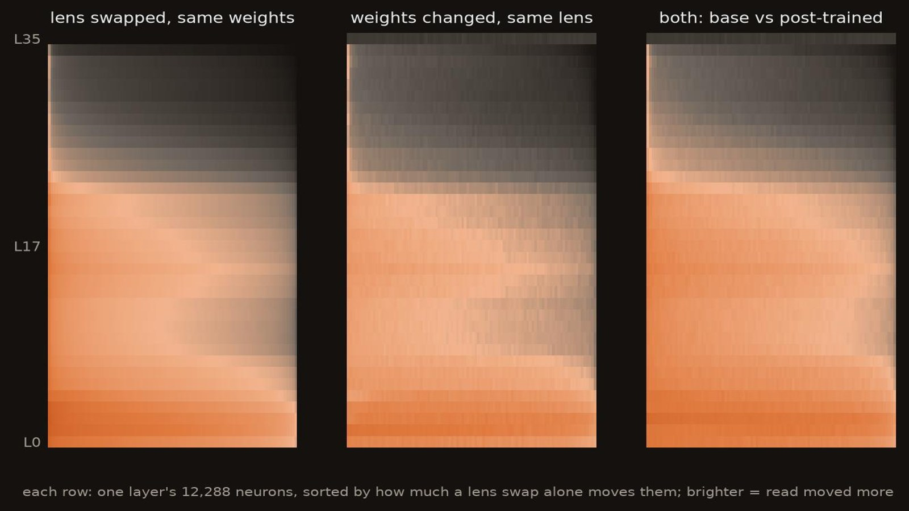
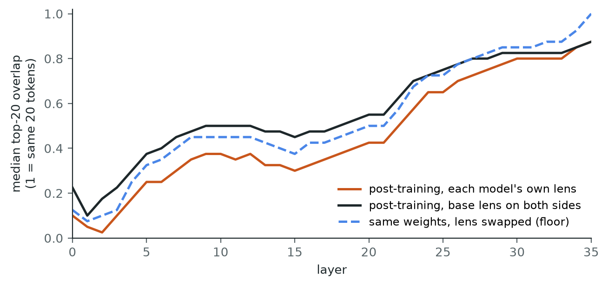
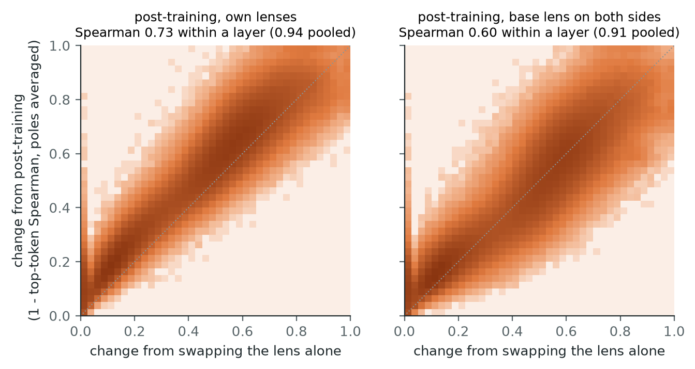
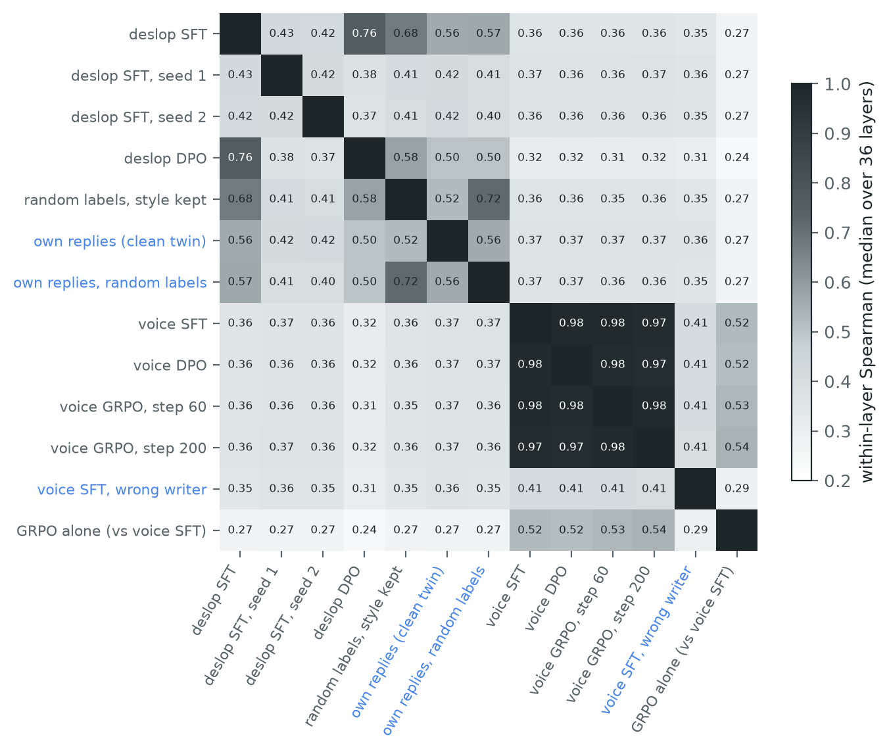
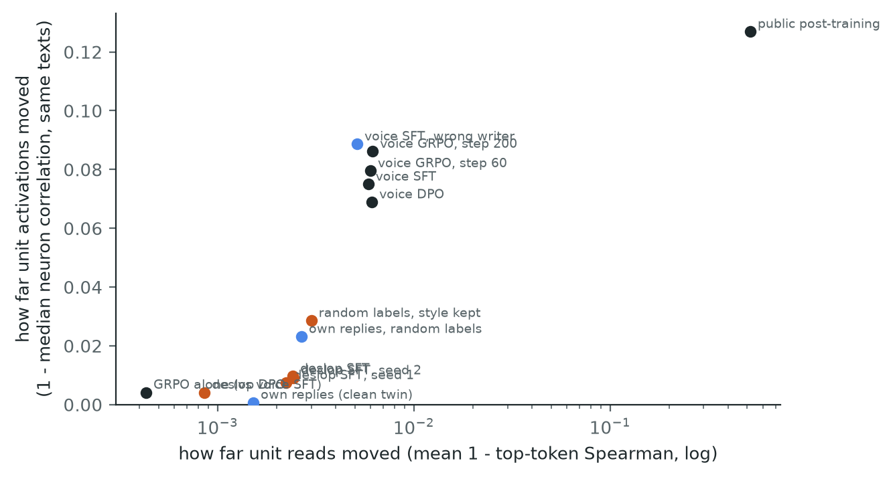
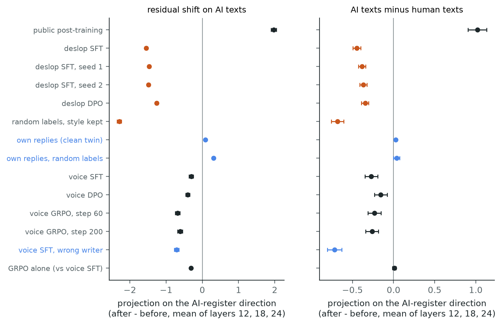

← Research·Experiments·
Which neurons does post-training change? A per-neuron read diff mostly can't tell
We read every neuron and attention head of Qwen3-8B before and after training. Swapping only the lens, on identical weights, moves the median neuron's read almost as far as public post-training does (0.50 of its top-20 tokens kept, against 0.43), and the two rankings of changed neurons agree at Spearman 0.73 within a layer.

results/unit_grids.json.Summary: the short answer and the key results
In short
What does post-training change inside a language model, neuron by neuron?
A per-neuron read diff mostly cannot say. We read all 442,368 MLP neurons and 1,152 attention heads of Qwen3-8B before and after training. Public post-training leaves the median neuron with 0.43 of its top-20 output tokens; reading identical weights through the other model's lens already leaves 0.50. The two change rankings agree at Spearman 0.73 within a layer, though only 15% of their top 1% is shared. For rank-16 LoRAs, reads barely move, and which neurons move is set by the LoRA's random init, not by what it was trained on. One objective did show as a direction: LoRAs trained on de-slopped replies moved the residual 1.3 to 2.3 units away from an AI-register direction (AI and human texts sit 3.4 apart), against clean twins started from the same init, at each of three seeds. That ruler was planned as secondary; the predicted effect on our primary ruler did not replicate.
Key results
| Question | Answer |
|---|---|
| How much does public post-training change a neuron's read? | The median neuron keeps 0.43 of its top-20 write tokens with each model's own lens, and 0.58 with the base lens on both. Swapping the lens alone keeps 0.50. At the last layer, which needs no lens, the weights alone leave 0.88. |
| Do the changed neurons stand out from the lens swap? | Only a little. Per-neuron change tracks the swap's at Spearman 0.73 within a layer (0.94 pooled, which also counts depth). 1.7% of neurons pass the swap's 99th percentile, against 1% by construction (heads: 3.4%). The most-moved 1% overlap by 15%. Read change does not follow weight change (0.02 within a layer). |
| Do LoRA fine-tunes move reads? | Hardly. Median top-20 overlap is 1.00 in all 13 comparisons, and mean change is 0.1–1.2% of public post-training's. Which neurons move follows the LoRA's random init: a de-slopping SFT agrees with an untrained-style twin from the same init at 0.57 within a layer, and with itself from another init at only 0.42, the same as with an unrelated twin from another init (0.41). |
| Do they move what units do on text? | More. On the same 1,000 texts the median neuron's before–after correlation is 0.925 for the voice SFT, 0.990 for the deslop SFT and 0.873 for public post-training. |
| Does the training objective show up? | For de-slopping, as a direction on a secondary ruler: −1.57 to −1.74 along the AI-register direction, SFT minus clean twins from the same init, at each of three seeds. Not as a set of units: the most-moved 1% lean toward AI text no more than average (1.00 [0.98, 1.02]). |
| Does RL add much after SFT? | 200 GRPO steps moved reads a fourteenth as far as the SFT before them (mean change 0.0004 vs 0.0059). |
| Predictions | 2 of 5 hit (P3, P5). P3 does not hold in the seed twins. |
01Introduction
Take neuron 4,993 in Qwen3-8B's last layer. Before post-training it pushes the model to say " stop", " stops", " stopped". After post-training it still does. Now take neuron 9,206 in layer 2: before, its top tokens are word fragments, and after, they are commas and " nearly". Did training rewire the second neuron, or was its label never readable?
The neuron-lens project makes the question askable. It fitted R- and S-lenses for Qwen3 at five sizes, base and post-trained, and keeps unit indices aligned between the two, so each neuron can be diffed against itself. What is missing is a floor: how far a read moves when the unit's weights did not change, or changed for an unrelated reason.
This note runs the diff with those floors beside it, on public post-training of Qwen3-8B and on LoRA fine-tunes whose behaviour earlier notes measured: de-slopping (deslop-h2h) and writing voice (Sounds Like Me, Episode 3).
Contributions:
- A diff of every neuron pole and head of Qwen3-8B across public post-training and 13 LoRA comparisons, against a lens swap, seed twins and clean twins.
- A negative result about the method: for LoRAs the list of most-changed neurons is set by the random init, and for public post-training the ranking follows a lens swap and not the weight change. A raw list of changed units is weak evidence about what training did.
- A lead on where an objective does show: a residual direction that moves with the style of the training replies, across three seeds.
What counts as success, set before the runs: post-training must move reads past the lens swap, the moved units must repeat across seeds more than across unrelated arms, and a link to the objective must hold against clean twins.
02Setup
Pairs. Each comparison has a before and an after side, with unit indices aligned.
| Pair | Before → after | Role |
|---|---|---|
| public, own lenses | Qwen3-8B-Base → Qwen3-8B, each through its own lens | public post-training |
| public, base lens | the same two models, both through the base lens | weights alone |
| lens swap | Qwen3-8B → itself, base lens → its own lens | floor: the lens alone |
| deslop SFT, DPO | Qwen3-8B → + LoRA trained toward plain replies | objective |
| deslop SFT, seeds 1 and 2 | same recipe and data, other seeds | seed floor |
| random labels, style kept | de-slopped replies shuffled across prompts | style without the prompt match |
| own replies (clean twin) | SFT on the model's own replies to the same 235 prompts | fine-tuning floor |
| own replies, random labels | the model's own replies shuffled across prompts | random-label floor, same rank and steps |
| voice SFT, DPO, GRPO 60 and 200 | Qwen3-8B → + Sounds Like Me Ep 3 LoRAs (DPO and GRPO start from the SFT) | objective |
| voice SFT, wrong writer | the same 442-step SFT with another writer's context | floor for the voice arms |
| GRPO alone | voice SFT → GRPO step 200 | what RL added |
Every LoRA is rank 16, alpha 32, on all seven projections. The deslop SFTs and twins are 60 steps. The seed twins' losses match the original's (about 0.65 → 0.22; results/twins.json).
Reads use weights only, after neuron-lens's readout.py and 08_reads.py:
- Write read: a pole's write through the R-lens and the unembedding, with each token's score z-scored across the layer's neurons, over the readable vocabulary.
- Read direction: the pole's gate ± up row pulled back to the input embeddings by the S-lens.
- Head OV read: what each head copies, over 20k tokens.
Measures. Top-20 overlap is the share of the top-20 tokens that stay (1 is unchanged). The change score is 1 minus the Spearman correlation of the two sides' scores on their top-50 tokens, averaged over both poles. Weight change is the change in the write vector relative to its length.
Activations. Both sides read the same 1,000 emails from probes-vs-interp (500 human, 500 AI-written, half fit, half eval), each wrapped as the reply to "Write a short text." with thinking off, at most 256 tokens. Three rulers measure AI register in the residual:
- primary: AI minus human residual means on the fit split (AUROC 0.95 on the eval split at layer 18);
- secondary: deslop-h2h's register direction at layers 12, 18 and 24 (default replies minus plain-prompted replies);
- secondary: the probes-vs-interp layer-18 AI-vs-human probe.
AI-lean of a neuron is its activation d′ between AI and human texts on the fit split, before training.
03How the study was run
- Exploration: a pilot on layers 0, 18 and 35 of two pairs, and training of the five control LoRAs.
- Committed the plan: pairs, measures, rulers and five predictions.
- Read every unit for 17 pairs, including an identical-model self-check.
- Ran both sides of 14 pairs on the fixed texts.
- Scored the predictions with
analyze.py. - Found a rounding artifact, dated a second amendment, and reran all 17 read pairs in fp32.
- Found that every seed-0 LoRA shares one random init (their A matrices have cosine 0.96–0.99; across seeds, 0.00). Dated a third amendment, then trained clean twins at seeds 1 and 2 and measured them the same way (4 more read and activation pairs).
| Fixed before the full runs | Changed or added later |
|---|---|
| Pairs, twins, corpus, vocabulary, k = 20 and 50, the three rulers, AI-lean, the five predictions and thresholds | After the pilot: the ranking score became 1 − Spearman, because overlap ties at 1.0 under a LoRA. After the full results: the wrong-writer twin became the voice arms' floor (no prediction uses it); the lens-stable subset, the last-layer number, the AI-minus-human shift and the emphasis on the register ruler were added, so treat them as exploratory. Also added: correlations within each layer, because the pooled ones count layer depth. Precision: the first run ranked fp16 scores, and rounding inflated the median LoRA change 1.4 to 2.9 times. All reads here are from the fp32 rerun; no prediction changed (precision_check.json, predictions_fp16.json). |
| Two planned controls | Not run: stratifying change by write-norm decile, and matching each arm to the twin nearest in weight change. |
Conditions: weights merged and token scores ranked in fp32 for reads; LoRAs left unmerged in bf16 for activations, where merging would round the update away. One Modal H100 per pair, about 80 seconds each with weights cached. No sampling.
Checks on the rulers, with bars set in advance:
- An identical model reads exactly 1.0 on every measure: passed (3 layers).
- Layer-2 S-lens reads look like tokens: loosely passed. By eye, under half of 10 random poles form a clear family, such as Lie liar lied.
- The fitted AI direction reaches AUROC 0.9 out of sample: passed (0.95).
- Read change grows with weight change (Spearman above 0.2): failed (−0.10 pooled). Read every per-unit number below with that failure in mind.
04Results
4.1 Post-training moves reads little further than a lens swap does
Through each model's own lens, the median neuron keeps 0.43 of its top-20 write tokens. But read the post-trained weights through the base model's lens and through their own, changing nothing in the neuron, and it keeps only 0.50. With the base lens on both models, so only the weights differ, it keeps 0.58: the weights alone move reads less than the lens alone does. Figure 1 shows this by layer. The S-lens read directions follow the same order (0.58 own lenses, 0.63 lens swap, 0.78 weights alone).
The lens swap is not pure noise. A lens summarises the layers downstream, and training changed those layers, so part of the swap is real post-training seen from elsewhere in the model. What it rules out is the per-unit claim: that a changed read means this neuron's weights were rewired.

Exploratory: in the 24% of neurons that keep at least 0.8 of their top 20 under the swap (99% of them in layers 23–35), post-training keeps 0.80 (0.83 through one lens). Heads that pass that test keep 0.85. Where a read is stable enough to trust, it mostly survives post-training. That subset is selected on stability, so this cannot show that the other 76% kept their function.
The median write vector keeps cosine 0.997 and moved 8% of its length. On the same texts the median neuron's activation correlates 0.87 between the two models, lowest around layer 18 (0.81).
4.2 A neuron's change under training follows its change under a lens swap
If post-training rewired particular neurons, they should stand out from the ones a lens swap moves. Figure 2 compares the two. Pooled over 442,368 neurons they agree at Spearman 0.94, but that counts depth: early layers move under anything. Within a layer they agree at 0.73 (median over layers; 10th to 90th percentile 0.48–0.82), and at 0.60 with post-training read through one lens. 1.7% of neurons pass the swap's 99th percentile, where 1% of the swap's own neurons lie; for heads it is 3.4%. The very top differs more: only 15% of post-training's most-moved 1% are also in the swap's.

The simplest explanation is fragility. A top-token list is a ranking, and some rankings are nearly flat, so any nudge reshuffles them. A sharp ranking, like a late neuron that writes " icon", " Icon", " icons", survives. Two observations fit. Read change is unrelated to how far the neuron's weights moved (0.02 within a layer). And 89% of the most-moved 1% sit in layers 0–6, where lens reads are least stable and often list glitch tokens such as webElementXpaths and -cmpr. Fragility was not measured directly.
The explorer shows readable units that moved, next to stable and random ones.
| Unit | Base model | Post-trained | Overlap |
|---|---|---|---|
| L35 neuron 4993 + | stop stops Stop | stop stops Stop | 1.00 |
| L35 neuron 10647 + | module模块 modules | module模块 modules | 1.00 |
| L10 neuron 8140 + | 象#line,sizeof | occured seperate succesfully | 0.05 |
| L23 neuron 3836 + | _Statics_MetadataUsageId | -actions-boot-ball | 0.05 |
| L8 head 27 (OV) | —and stuff favour | — folks—and | 0.60 |
| L0 head 30 (OV) | spNetoolStrip_gshared | in and the | 0.20 |
In several of these the base read is junk and the post-trained read is a clean family: common misspellings, hyphenated suffixes, function words. They are leads. Whether training sharpened those units needs an intervention (section 9).
4.3 For LoRAs, the random init decides which neurons move
The median neuron's top-20 tokens are unchanged in all 13 comparisons. Mean change is 0.0004–0.0062, against 0.52 for public post-training. All of the deslop SFT's most-moved 1% sit in layers 1–3.
Which neurons move is decided mostly before training starts. The training recipe seeds the random number generator before it creates the LoRA, so every arm trained with seed 0 starts from the same random matrices. With clean twins trained at every seed (amendment 3), the comparison separates objective from init:
| Deslop SFT compared with | Within-layer Spearman | Top-1% shared |
|---|---|---|
| itself from another init (same data and objective) | 0.42 | 72% |
| a clean twin from the same init (other replies, no style) | 0.57 | 84% |
| a clean twin from another init | 0.41 | 72% |
Means over 3 seeds × 2 twin kinds; ranges in results/matched_init.json. The objective adds about 0.01 to the agreement; the init adds about 0.15; and a large shared core (0.41, 72% of the top 1%) moves under any of these fine-tunes. The cheap baseline finds the same neurons: 83% of the deslop SFT's top 1% are also in its top 1% by relative weight change.

Activations separate the arms more (Figure 4). The voice SFT moved reads 1.1% as far as public post-training and activations 59% as far (median correlation 0.925 against 0.873). The wrong-writer twin moved activations further still (0.911), so this measures how far a fine-tune drifted, not whether it hit its objective. One untested explanation is that small weight changes upstream add up in what reaches each neuron, while its own write barely changes.

4.4 De-slopping shows up on a register direction, not in a set of units
On deslop-h2h's register direction, a secondary ruler, the arms split by what they trained on (Figure 5). On the 250 eval AI texts:
- three deslop SFT seeds moved −1.55, −1.47 and −1.49, and DPO −1.26;
- the same replies shuffled across prompts moved −2.29;
- the six clean twins (three inits) moved between +0.08 and +0.31;
- public post-training moved +1.97, the direction you would expect if chat training creates the register.
Against clean twins from its own init, each SFT seed moved −1.74, −1.57 and −1.65 (95% intervals within ±0.04). AI and human texts sit 3.35 apart on this ruler before training. The deslop shifts are larger on AI texts than on human ones; the twins show little such gap.

Four things keep this a lead:
- The direction is default replies minus plain-prompted replies, and the training replies came from the plain prompt, so the ruler is close to the training data.
- The shuffled-label arm moves furthest: the effect follows reply style, not the prompt-to-reply mapping.
- The voice arms move (−0.30 to −0.68), but their wrong-writer twin moves more (−0.71), so their shift is not specific to the writer.
- The direction was built on Qwen3-8B, and for the public pair it is also applied to the base model's residual.
The pre-registered test (P3) used the primary ruler, arm minus the mean clean twin, over layers 18–35. It went as predicted for the deslop SFT (−0.38 [−0.51, −0.25]) and DPO (−0.85 [−0.98, −0.71]), which share their twins' init. Against twins from their own init, the other two seeds give +0.06 [−0.06, 0.20] and +0.84 [0.69, 0.99]. All are under 2% of that ruler's 48-unit AI–human gap. P3 is a hit by its rule and should not be believed. The layer-18 probe, the other secondary ruler, agrees with the register direction in sign: each seed sits below its own twins, by 0.105, 0.025 and 0.052, intervals below zero.
At the unit level the link fails (P4). The 1% of neurons the deslop SFT moved most beyond its clean twins have 1.00 [0.98, 1.02] times the average |AI-lean|, inside the 0.97–1.03 range of random sets (1.07 against sets matched on activation size). Against twins from their own init, the other seeds give 1.01 and 1.09 [1.06, 1.11]; the voice arms give 0.82–0.84. So there is no consistent sign. The 64 most AI-leaning layer-18 neurons from probes-vs-interp rank at mean percentile 0.67 [0.59, 0.74] in the deslop SFT's change, and 0.56 and 0.55 in its seed twins.
4.5 RL after SFT moves units less than the SFT did
GRPO step 200, read against the SFT it started from, moved reads a fourteenth as far as the SFT had (mean change 0.0004 vs 0.0059; median 0.0001 vs 0.0010). It moved activations about an eighteenth as far (1 − median correlation 0.004 vs 0.075). P5 hit. Sounds Like Me Ep 3 found that the same GRPO run learned reward hacks, so a small internal change is not a small behavioural one.
05Implications for AI safety
A per-unit diff is an appealing audit: compare a model with its fine-tune and list the units that changed. Here such a list always exists. For our LoRAs it was set mostly by the random init, and a twin trained on unrelated text from the same init produced most of it. A small read diff is no reassurance either: the GRPO run that learned hacks barely moved any read.
Activations on fixed text and residual directions separated the arms better, and only next to matched twins.
Before trusting a claim that particular neurons changed in training, ask for the same ranking under a lens swap, a seed twin and a clean twin, and discount the units that top those lists too.
06Predictions
| # | Prediction (confidence) | Result | Hit? | Why |
|---|---|---|---|---|
| P1 | Public post-training's median top-20 overlap is at least 0.10 below the lens swap's (75%) | 0.43 vs 0.50, gap 0.075 | miss | The lens swap moves reads far more than expected |
| P2 | Moved neurons repeat across seeds: Spearman ≥ 0.30 and above an unrelated arm (50%) | Seeds 0.56, 0.57; random-label twin 0.68 (first run: 0.65, 0.65; 0.73) | miss | The random-label twin shared the SFT's init; against twins from another init the seeds lead by about 0.01 within a layer |
| P3 | Deslop SFT and DPO push the residual away from the AI direction on AI texts, beyond clean twins (65%) | −0.38 [−0.51, −0.25]; −0.85 [−0.98, −0.71] | hit, not robust | Against their own twins the other seeds give +0.06 and +0.84 |
| P4 | The top 1% objective-specific neurons lean toward AI text at least 1.3× average (45%) | 1.00 [0.98, 1.02] (first run: 1.01) | miss | The objective is not in which reads moved |
| P5 | GRPO after SFT moves units less than the SFT did (70%) | median 0.0001 vs 0.0010 (first run: 0.0004 vs 0.0013) | hit | A small update on top of a larger one |
Under the second amendment, read-based predictions had to hit in both the fp16 and the fp32 run; none differed.
What surprised me: the lens alone changes half of the median neuron's top tokens. What I would change: rank in fp32 from the start, give every control its own random init, measure each unit's fragility first, and test a direction on seed twins before registering it. The lesson for the design guide: a per-unit change score needs a floor per unit, not one per study.
07What this does not show
- That changed units matter, or that unchanged ones don't. Nothing was ablated or patched back. Behaviour was measured in the LoRAs' own notes.
- Lens noise on its own. The swap compares two models' lens fits. A refit of one model's lens on split halves would separate fitting noise from real downstream change; it was not run.
- The catalog's exact reads. Ours skip neuron-lens's residual metric and its handling of SwiGLU's negative lobe, and use 20k tokens for heads. The full recipe may be more stable.
- Other models or larger updates. Qwen3-8B only, rank 16, 60 or 442 SFT steps. The monitor-evasion LoRA sits on Qwen2.5-1.5B, which has no fitted lens, and was left out.
- Register in generation. The shifts are measured on fixed emails, not on the models' own replies.
- Inits for the voice arms. The voice SFT and its wrong-writer twin start from different inits, so part of their difference is init, as section 4.3 shows for the deslop arms.
- Independent units. Intervals resample texts or units; neurons in a layer are not independent, so unit-level intervals are too narrow.
08Reproduce it
reproduce.sh runs the study (--dry-run prints the commands). It needs Modal, a Hugging Face secret, the seven LoRAs from the two earlier notes, and the probes-vs-interp text set, which is not redistributed here. The GPU work, both read runs included, is logged at list price (results/spend.jsonl). Lenses: stdlogits/rs-lenses.
09What's next
- Patch the readable moved units back to their base weights and measure whether chat behaviour or register follows.
- Refit one lens on split halves, give every unit a fragility score, and rank by change beyond it.
- Rank units by activation change beyond the seed and clean twins, then test those against the objective.
- Repeat at the other Qwen3 sizes, where the lenses and aligned indices exist.
10Questions readers ask
How much does post-training change Qwen3-8B's neurons?
The median last-layer neuron keeps 0.88 of its top-20 output tokens. Across all layers the median keeps 0.43, but swapping the lens on identical weights already leaves only 0.50.
Can you tell which neurons post-training rewired?
Not from read diffs alone: per-neuron change under post-training agrees with change under a lens swap at Spearman 0.73 within a layer, and does not follow how far the weights moved.
Do LoRA fine-tunes change what neurons mean?
Their weight-based reads hardly change at rank 16: median top-20 overlap is 1.00 in all 13 comparisons. Activations change more, up to about 70% of public post-training's shift for the wrong-writer voice twin.
Where does a de-slopping fine-tune show up inside the model?
On an AI-register direction in the residual, which moved by −1.3 to −2.3 on AI texts and −1.57 to −1.74 against clean twins from the same init, on a secondary ruler. It did not show up as a set of AI-leaning neurons.
What is an R-lens?
An R-lens is a fitted Jacobian, one matrix per layer, that maps a vector in the residual stream to the words it would make the model say.
AAppendix: data and references
| File | What it holds |
|---|---|
| summary.json | Per pair: median, mean, percentiles and per-layer medians of each measure. wR is the write read, rS the S-lens read, ovR the head OV read; _ov is top-20 overlap and _rho top-token Spearman; *_cos are weight cosines and *_rel relative weight changes. Also floors, lens-stable subsets and the self-check |
| agreement.json | Spearman and top-1% overlap of per-neuron change between every two comparisons; change against weight change |
| acts.json | Activation correlations and shifts; ruler shifts on AI and human texts with 95% intervals, gaps before training, shifts against clean twins |
| objective.json | AI-lean of each arm's top 1%, random and size-matched baselines, the 64 probe neurons' percentiles |
| top_units.json | Most-moved, stable, random and lens-stable units with before and after tokens |
| known_answer_c_layer2_sreads.json | The ten layer-2 reads inspected by eye |
| predictions.json, predictions_fp16.json | P1–P5 scored, on the fp32 rerun and on the first run |
| matched_init.json | Amendment 3: agreement by objective and init, and each SFT seed against clean twins from its own init on the three rulers |
| precision_check.json | Each comparison's change scores in fp16 against fp32 |
| twins.json, corpus_manifest.json, spend.jsonl | Control training runs; corpus ids and hash; compute ledger |
References: neuron-lens (MIT) and its R/S lenses; Qwen3-8B and Qwen3-8B-Base; deslop-h2h, Sounds Like Me Ep 3 and probes-vs-interp.
How to cite
@misc{lie2026posttraindiff,
title = {Which neurons does post-training change? A per-neuron read diff mostly can't tell},
author = {Lie, Albert},
year = {2026},
url = {https://albertlieyingadrian.github.io/steerlab/experiments/posttrain-diff/report/}
}